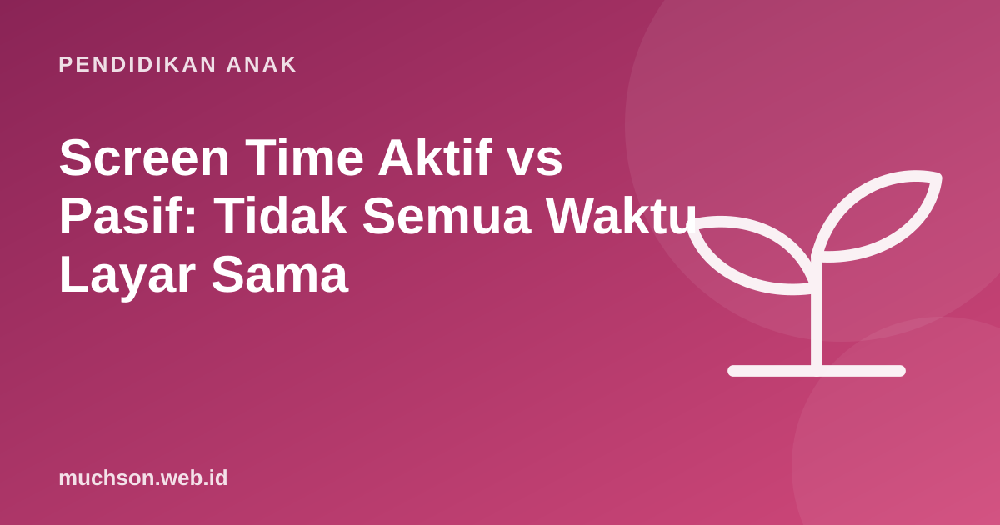

Beranda › Artikel › Pendidikan Anak
Pendidikan AnakScreen Time Aktif vs Pasif: Tidak Semua Waktu Layar Sama
Dua anak sama-sama 1 jam di depan tablet. Yang satu menggulir video pendek tanpa henti, yang lain membuat animasi tentang kucingnya. Angka jamnya sama, tetapi pengalamannya sangat berbeda. Memahami beda waktu layar aktif dan pasif membantu orang tua membuat aturan yang lebih adil dan efektif.

Definisi sederhana
Pembagian ini tidak hitam-putih. Menonton film dokumenter bersama orang tua lalu mendiskusikannya bisa sangat bernilai. Sebaliknya, game "edukatif" yang hanya meminta anak mengetuk layar demi hadiah bisa sangat pasif. Yang dinilai adalah apa yang dilakukan otak anak, bukan label aplikasinya.
Empat pertanyaan untuk menilai kualitas
Kathy Hirsh-Pasek dan rekan-rekannya (2015) dalam jurnal Psychological Science in the Public Interest mengusulkan empat pilar pembelajaran yang bisa dipakai menilai aplikasi pendidikan. Saya sederhanakan menjadi empat pertanyaan:
- Apakah anak aktif berpikir? Bukan sekadar mengetuk, tetapi memutuskan, merencanakan, menebak.
- Apakah anak terlibat tanpa terganggu? Aplikasi yang penuh iklan, notifikasi, dan efek berlebihan memecah perhatian.
- Apakah bermakna? Isinya terhubung dengan kehidupan dan pengetahuan anak.
- Apakah ada interaksi sosial? Dengan orang tua, teman, atau guru, misalnya membahas atau memamerkan hasil.
Contoh waktu layar aktif yang bermakna
| Kegiatan | Yang dilatih | Ide memulai |
|---|---|---|
| Coding visual | Logika, kreativitas, ketekunan | Buat kartu ucapan beranimasi di Scratch |
| Menggambar digital | Kreativitas, motorik halus | Gambar tokoh, lalu animasikan |
| Membuat video atau foto cerita | Bercerita, perencanaan | Video stop-motion dengan mainan |
| Video call keluarga | Bahasa, hubungan sosial | Jadwal rutin dengan kakek-nenek |
| E-book interaktif dibaca bersama | Literasi | Bacakan, lalu tanyakan prediksi cerita |
| Mencari jawaban rasa penasaran | Literasi informasi | "Kenapa langit biru?" dicari bersama |
Menggeser, bukan hanya mengurangi
Melarang tanpa alternatif biasanya memicu konflik. Strategi yang lebih berhasil adalah menggeser komposisinya sedikit demi sedikit. Misalnya, dari 90 menit menonton per hari menjadi 60 menit menonton dan 30 menit membuat sesuatu. Setelah anak menemukan kegiatan kreatif yang ia sukai, pergeseran berikutnya lebih mudah.
Waktu layar aktif tetap waktu layar. Mata tetap butuh istirahat (misalnya aturan 20-20-20), tubuh tetap butuh bergerak, dan tidur tetap prioritas.
Peran orang tua: co-viewing dan co-creating
Menonton bersama (co-viewing) dan membuat bersama (co-creating) mengubah waktu layar pasif menjadi lebih aktif. Pertanyaan sederhana seperti "menurutmu kenapa tokohnya melakukan itu?" atau "bagaimana kalau kita buat versi kita sendiri?" sudah cukup. Untuk kegiatan membuat yang terstruktur, pelajaran coding PixelKode bisa dicoba bersama anak dalam satu sore.
Tanya jawab
Apa itu screen time aktif?
Apakah screen time aktif boleh tanpa batas?
Bagaimana menilai aplikasi edukasi?
Apakah menonton selalu buruk?
Sumber dan bacaan lanjut
- Hirsh-Pasek, K. dkk. (2015). Putting education in "educational" apps. Psychological Science in the Public Interest
- AAP (2016). Media and Young Minds
- AAP Family Media Plan
- WHO (2019). Pedoman aktivitas fisik, perilaku sedenter, dan tidur anak di bawah 5 tahun